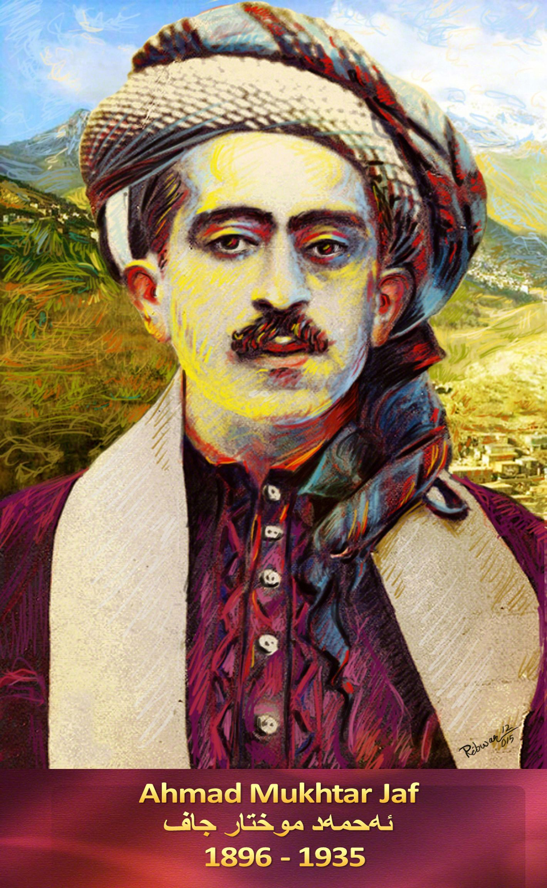

ئەحمەد موختار جاف

ئەحمەد موختار بەگی جاف (١٨٩٨-١٩٣٥) شاعیر و سیاسەتوانی ناوداری کورد بوو.
ژیانی
ناوی ئەحمەدی کوڕی
وەسمان پاشای گەورەی جافە، کوڕی محەممەد پاشا کوڕی کەیخەسرەو بەگ کوڕی سلێمان بەگ کوڕی عەبدوڵڵا بەگی کوڕی تاھیر بەگی جافە و ناوی دایکیشی عادیلە خانمە کە لە زەبر و زەنگ و رامیاری دا بەناوبانگ بووە. ساڵی ١٨٩٨ لە ھەڵەبجە لەدایکبووە. ئەحمەد موختار بەگ بە لێکدانەوەی ئەبجەدی دەکاتە ١٣١٦ی کۆچی کەبریتییە لە مێژووی لەدایکبوونی و بۆیە ئەو ناوە نراوە.
وەسمان پاشای باوکی و مەحمود پاشای باوکی کە ھەردووکیان میر و لە سەرۆکە ھەرە گەورەکانی خێڵی جافانن، لە لایەن سوڵتانەکانی عوسمانی یەوە پایەو ناوبانگی (پاشا) یەتیان دراوەتی.
ھەرچەندە دەرچووی قوتابخانەو خوێندنگا باڵاکان نەبووە، بەڵام مرۆڤێکی زیرەک و وردبین بووە.
بێجگەلەزمانی کوردی، فارسی و تورکی و عەرەبی و کەمێکیش ئینگلیزی زانیوە. تەنانەت بەزمانی فارسی چەند ھەوڵێکی شیعریی ھەیە، خۆی و تاھیر بەگی برای بەدوو شاعیری گەورەی کورد دەژمێردرێن. ئەم شاعیرە بەتوانایە لە ھەموو بوارەکاندا شیعری وتووە و ھەڵبەستە نیشتمانییەکانی لەریزی پێشەوەی ھەڵبەستە نیشتمانییەکانی سەرەتای سەدەی ڕابردوو دادەنرێن.
ئەو ھەستیارە پایەبەرزە بەھۆی فێربوونی ئەو زمانانەوە دەروازەی ھەموو جۆرە ھونەرێکی وێژەیی بە جارێکی لەسەر کرایەوە. ئەحمەد موختار بەگ لاوێکی جوانچاک و
سووروسپی و مووزەرد و چاوشین و شۆخ و شەنگ و رووخۆش و دەم بە پێکەنین و باڵابەرز و تەڕپۆش و دڵتەڕبووە، ھەروەکو لە مەیدانی ئازایەتی و ھۆشیاری و زرنگی و سوارچاکی و راوسەیران و نیشانەئەنگاوتندا پاڵەوانێکی ناسراوبووە لە کۆڕی جوامێری و یاریکاری و دەستی ھەژاران گرتن و دڵنەرمی و بەزەیی و نان بدەیەتی و خێرەمەندی و جوامێریش دا بێ ھاوتابووە.
ئەحمەد موختار بەگ
لەبەرئەوەی لەبنەماڵەیەکی دەسەڵاتدار و بەناوبانگی جافە، تێکەڵی ڕامیاری و کاروباری دەوڵەتیش بووە. لەڕووی کۆمەڵایەتییەوە کەسایەتییەکی خۆشەویست و خێرەومەند بووە. لە تەمەنی ٢٠ ساڵیدا ھاوسەری بۆخۆی خوازتوە و لە ١٩٢٢دا بووە بە قائیمقامی ھەڵەبجە، لە ١٩٢٤دا کرا بە نوێنەر و لە کۆڕی دامەزراندنی دەوڵەتی عێراقی و لە (مەجلسی) نوێنەراندا تا ساڵی ١٩٣٥.
لە ٦ی شوباتی ١٩٣٥ و لە تەمەنی ٣٨ ساڵیدا کە لەسەر چۆمی سیروان بە کەڵەکی دەپەڕیەوە لە لایەن چەند ناپاکێکی دڵ و دەروون رەقەوە کوژرا، و تەرمەکەی لە تەنیشت گۆڕی تاھیر بەگی لەگوندی عەبابەیلێی نزیکی ھەڵەبجە بە خاک سپێردرا.
ئەحمەد بەگ دوو کوڕ و سێ کچی لە پاش بەجێ ماوون، ناوی کوڕە گەورەکەیان غاندی و بچووکەکەیان ئەفراسیاب بەگە، و کچێکیشی بە ناوی شەمسە.
نموونە شێعری ئەحمەد موختار جاف
لە خەو ھەڵسن درەنگە میللەتی کورد خەو زەرەرتانە
ھەموو تەئریخی عالەم شاھیدی فەزڵ و ھونەرتانە
دەسا تێکۆشن ئەی قەومی نەجیبیی بێکەس و مەزڵووم
بەگورجی بیبڕن ئەو ڕێگە دوورە وا لەبەرتانە
بخوێنن، چونکە خوێندن بۆ دیفاعی تیغی دوشمنتان
ھەموو ئان و زەمانێ عەینی قەڵغان و سوپەرتانە
بەخۆڕایی لە دەستی بەرمەدەن ئەم خاکە مەحبووبە
کە تۆزی وەک جەواھیر سورمە و کوحلی بەسەرتانە
بەسەر خاکا ئەگەر نازیش بکەن حەقتانە کوردینە
تەماشای سێبەری ئەو شاخ و کێوەی وا لەسەرتانە
بە بێقەدری بەسەریا ڕامەبوورن حورمەتی بگرن
گوڵاڵە سوورەی ئەم سەحرایە >خوێناوی جگەرتانە
دەمێکە ئەم وڵاتە وا ئەسیری پەنجەیی جەھلە
لە سایەی عیلمەوە ئەمڕۆ ئیتر نۆبەی زەفەرتانە
زوبانی حاڵی «ئەحمەد» ھەر ئەڵێ وریا بن ئەی میللەت
بزانن بەردی ئەم شاخانە ئەڵماس و گوھەرتانە